Hi there, I am Peichi
I'm a Product Designer specializing in visual, UI, and motion design, with 3+ years of experience across finance, insurance, and cross-disciplinary products. I studied Interaction Design in Taiwan and spent an exchange year in Interface Design at FHP, Germany, an experience that taught me to think beyond the frame and approach problems from different angles.
That mindset carries into how I work. I love experimenting with new media and tools, letting each project carry its own sense of experimentation and story, while staying skilled at turning complex information architecture into clear, modular systems, finding balance between freedom and structure.
Mandarin
Native
English
Fluent in professional and academic settings
Japanese
Comfortable with reading and listening
German
Familiar with basic phrases and expressions
Language is a window into culture
One year in Germany made me an adaptable soul 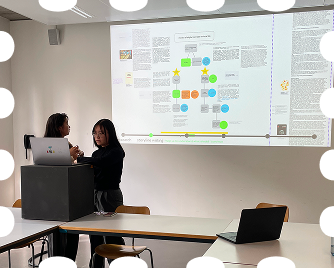 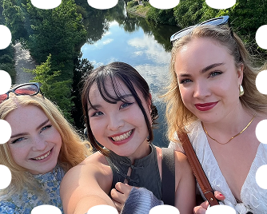 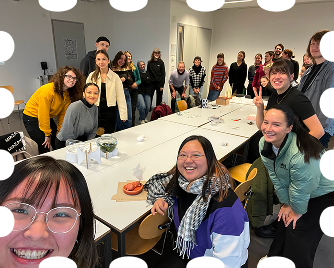 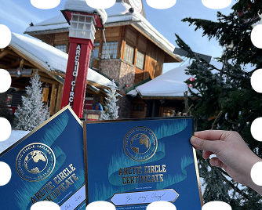 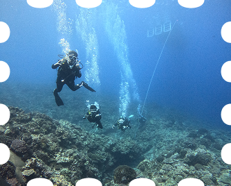 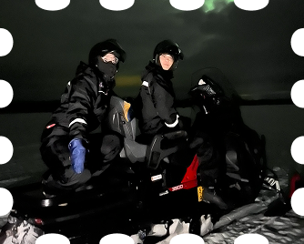 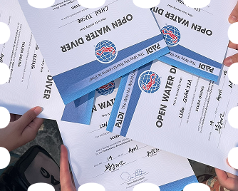 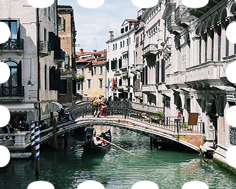 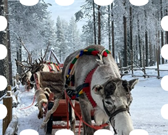 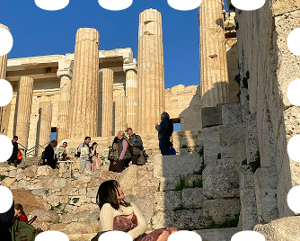 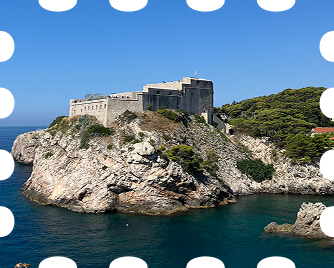
Wanna know me more?
How about a matcha chat with me
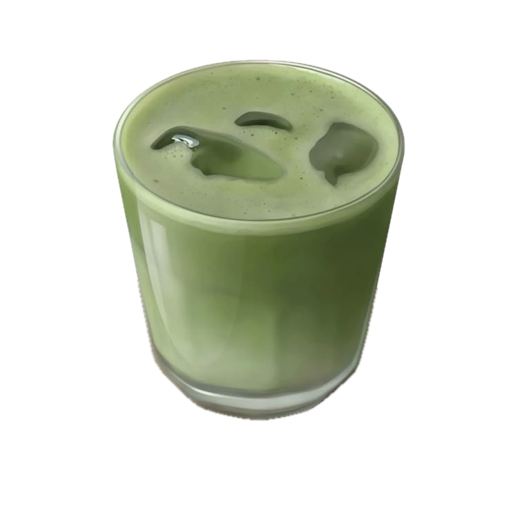
Beer is welcome too <3